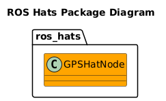
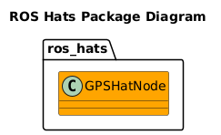

ROS Hats
TOC
- ROS Version Support
- Overview
- Messages
- Supported Hats
- Sister Repositories
- Compatability
- Setup Instructions
- Usage Instructions
- Development Instructions
- Test Plan
Welcome to the ros_hats Wiki!
ROS Version Support
ros_hats will target ROS Noetic for current and releases.
Overview
This repo provices some ROS nodes to interface with Raspberry Pi Hats.
@ref doc/SupportedHats/SuportedHats.md "Supported Hats"
Compatability
This package is currently compatible with the following architectures:
- Any x86/64 compatible system
- ARM7L (such as Raspberry Pi 2 or 3)
If you would like to use this in your project on an architecture that is not currently supported (but is still ROS compliant), let me know and I'll see what I can do to help.
Setup Instructions
First follow setup instructions for eros-Setup Instructions.
Then run the following your device:
sudo apt install gpsd libgps-dev
Software Design
 
